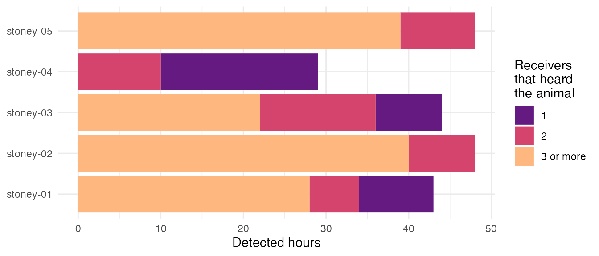
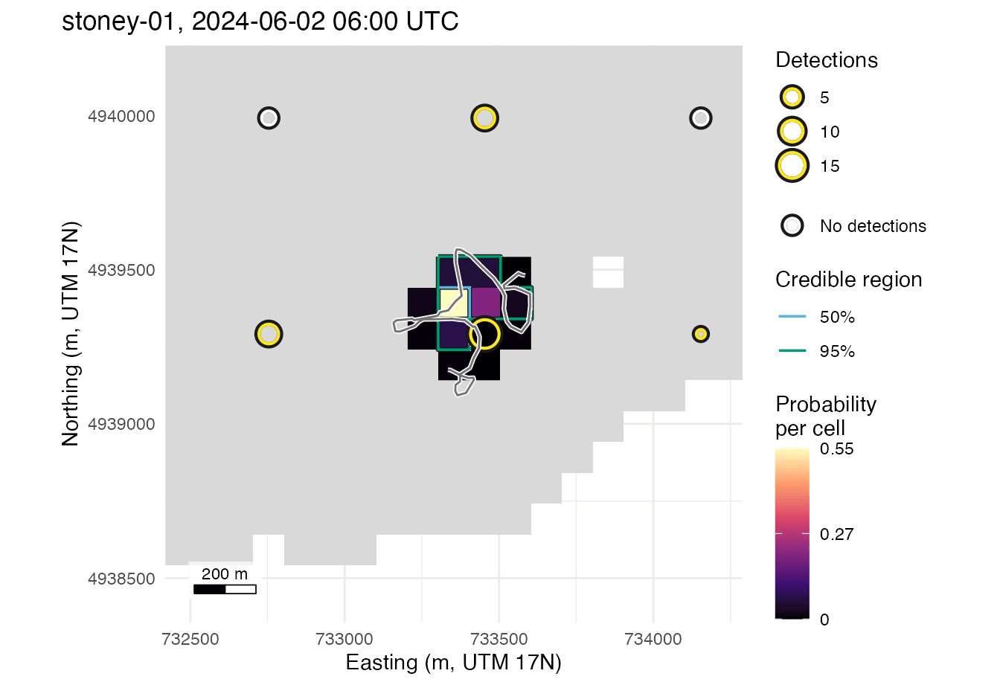
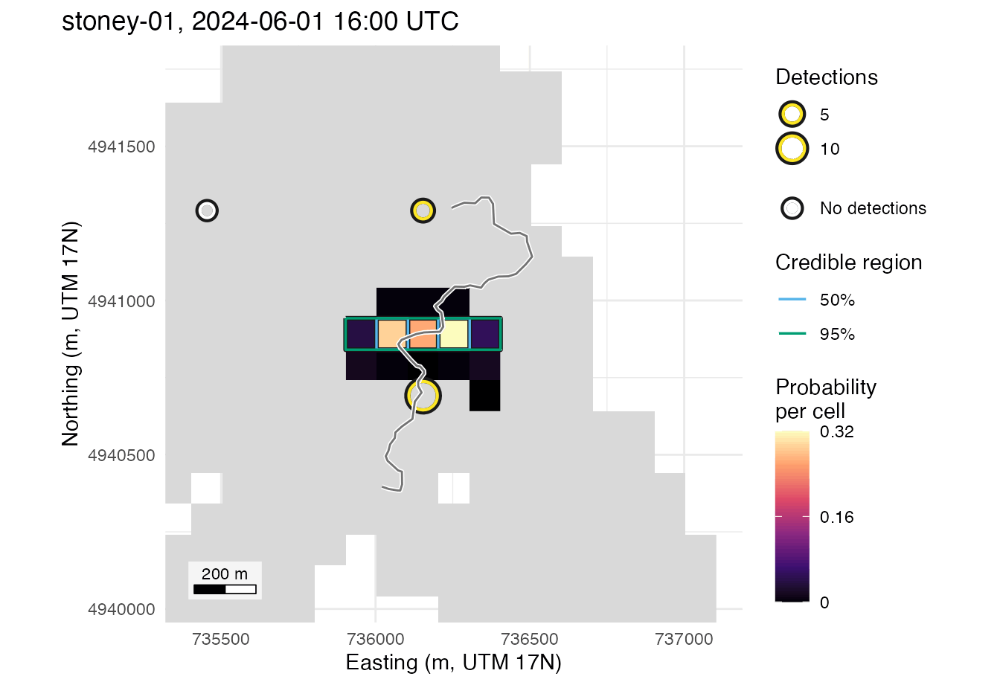
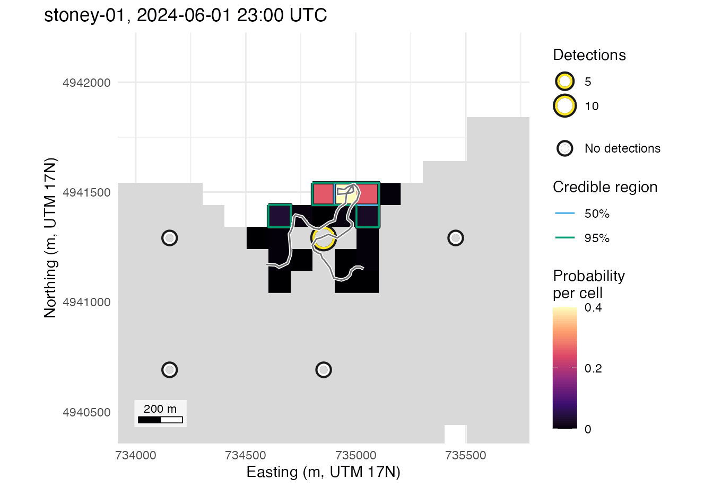

The detqc
R package reads, checks and filters detection files into a detection
set; detfield positions the animals. This page reads
the files of the Stoney Lake example included with
detfield with detqc’s readers, hands
the detection set to bin_detections() with
detqc::as_detfield_input(), and computes the hourly
location surfaces. The example has five simulated animals and 70
receivers over 48 hours from 1 June 2024. A detection set that
detqc has checked and filtered, such as its own
detqc::stoney_clean, is handed over the same way.
Read the files into a detection set
The three files, detections, deployments and tags, are already in the column names the positionR packages share, so the column map detqc reads them with names each column as itself. A file in another layout takes a map from your column names to these; the OTN, GLATOS, VUE and VDAT formats need none.
# Attach detfield, and ggplot2 for the figures
library(detfield)
library(ggplot2)
# A column map that reads each named column as itself, with its type
same_names <- function(types) {
data.frame(format = "glatos", target = names(types), source = names(types),
sep = "", type = unname(types),
tz = ifelse(types == "datetime", "UTC", ""), note = "")
}
same_names(c(datetime = "datetime", receiver_serial = "character"))
#> format target source sep type tz
#> datetime glatos datetime datetime datetime UTC
#> receiver_serial glatos receiver_serial receiver_serial character
#> note
#> datetime
#> receiver_serial
# Find a file included with detfield
in_file <- function(name) system.file("extdata", name, package = "detfield")
# Read the detections, the receiver deployments and the tags with detqc
detections <- detqc::read_detections(
in_file("stoney_detections.csv"), format = "glatos",
col_map = same_names(c(datetime = "datetime", receiver_serial = "character",
transmitter = "character", animal_id = "character"))
)
deployments <- detqc::read_deployments(
in_file("stoney_deployments.csv"), format = "glatos",
col_map = same_names(c(receiver_serial = "character",
station_id = "character",
deploy_datetime = "datetime",
recover_datetime = "datetime",
deploy_lat = "numeric", deploy_lon = "numeric",
deploy_z = "numeric"))
)
animals <- detqc::read_animals(
in_file("stoney_tags.csv"), format = "glatos",
col_map = same_names(c(transmitter = "character", animal_id = "character",
min_delay = "numeric", max_delay = "numeric"))
)
c(detections = nrow(detections), deployments = nrow(deployments),
animals = nrow(animals))
#> detections deployments animals
#> 3641 70 5detqc::detset() joins the three tables and gives each
detection the station of the deployment in the water when it was
logged:
# Build the detection set
dets <- detqc::detset(detections, deployments, animals)
dets
#> <detset> 3,641 detections of 5 animals (5 transmitters), heard on 48 of 70
#> receivers at 48 of 70 stations
#> 2024-06-01 to 2024-06-02 (UTC); 70 deployments; 5 animal rows; 280
#> receiver-days deployed (listening not audited)
#> log: 1 step (detset)Hand off
detqc::as_detfield_input() returns the three tables
bin_detections() reads: the detections, the listening
table, and the tag delays from the animals table. A receiver counts as
listening in an hour when it was in the water and the listening audit of
detqc, where it has run, did not mark its day as not
listening.
# Export the detections, the listening table and the tag delays for detfield
detfield_input <- detqc::as_detfield_input(dets)
str(detfield_input, max.level = 1)
#> List of 3
#> $ detections:'data.frame': 3641 obs. of 5 variables:
#> $ listening :List of 2
#> $ tag_delay :'data.frame': 5 obs. of 4 variables:
# Count detections per animal, hour and listening receiver
hourly <- do.call(bin_detections, detfield_input)
table(unique(hourly[c("animal_id", "bin_start")])$animal_id)
#>
#> stoney-01 stoney-02 stoney-03 stoney-04 stoney-05
#> 43 48 44 29 48The field is built from the lake raster and the deployments of the
detection set, which keep deploy_lat,
deploy_lon and deploy_z, with the Stoney
stand-in curve, the curve the detections were simulated from. A study
with its own range test reads its fitted model here, as Range models: bring your own, or start from two
distances shows.
# Read the lake and measure distances through water from the deployments
lake <- terra::rast(in_file("stoney_depth.tif"))
distances <- water_distances(lake, dets$deployments)
# Build the field from the stand-in curve, with no spread between hours
curve <- de_logistic(d50 = c(250, 750), d05 = c(500, 1500), depth = c(1, 35))
field <- de_field(distances, de_model(curve, sigma = list(station_hour = 0)))
#> 194 of 7,665 receiver-cell pairs with p >= 0.05 have land on the
#> straight line between them; with blocked = 0 the curve is read on
#> them as if the line were clear. See `blocked` in ?de_model.location_surface() gives each detected hour a
probability over the water cells (the model):
# Compute one surface per animal and detected hour
surface <- location_surface(hourly, field)
surface
#> Location surface: 5 animals, 212 bins, 5,935 cells kept in all
#> Cells kept per bin: median 19 of 4,818 water cells (range 6 to 220)
#> Likelihood: binomial (detections and misses at every listening
#> receiver)
#> Spread: none (overdispersion = "none")
#> Each bin keeps the smallest set of cells holding 0.999 of its
#> probability
#> Misfit: 10 of 212 bins have a detecting receiver whose count the
#> surface gives a chance below 0.01
#> Near: 42 of 212 bins put under 0.001 of their probability within 223.6
#> to 447.3 m of the receiver with the most detections (per receiver,
#> its farthest cell centre at p >= 0.5)
#> Modes sit a median 316 m (max 707 m) from the nearest detecting
#> receiver, over 212 bins
#> animal_id bin_start cell prob
#> 1 stoney-01 2024-06-01 04:00:00 2502 0.11483610
#> 2 stoney-01 2024-06-01 04:00:00 2836 0.11204501
#> 3 stoney-01 2024-06-01 04:00:00 2669 0.10679931
#> 4 stoney-01 2024-06-01 04:00:00 2670 0.08250961
#> 5 stoney-01 2024-06-01 04:00:00 2837 0.08169543
#> 6 stoney-01 2024-06-01 04:00:00 2334 0.07064917Hours by receivers heard
How well an hour is placed depends first on how many receivers heard the animal in it.
# Count the receivers that heard each animal in each hour, three or more
# together
heard <- hourly[hourly$y > 0, ]
heard_by <- aggregate(list(receivers = heard$station_id,
detections = heard$y),
by = heard[c("animal_id", "bin_start")],
FUN = function(v) if (is.numeric(v)) sum(v) else length(v))
heard_by$heard_by <- factor(pmin(heard_by$receivers, 3), 1:3,
c("1", "2", "3 or more"))
# Tabulate the hours per animal
hours_table <- table(heard_by$animal_id, heard_by$heard_by)
hours_table
#>
#> 1 2 3 or more
#> stoney-01 9 6 28
#> stoney-02 0 8 40
#> stoney-03 8 14 22
#> stoney-04 19 10 0
#> stoney-05 0 9 39
round(mean(heard_by$receivers == 1), 2)
#> [1] 0.17
# Plot the detected hours of each animal by the receivers that heard it
ggplot(heard_by, aes(animal_id, fill = heard_by)) +
geom_bar() +
scale_fill_viridis_d(name = "Receivers\nthat heard\nthe animal",
option = "magma", begin = 0.3, end = 0.85) +
coord_flip() +
labs(x = NULL, y = "Detected hours") +
theme_positionr()
Detected hours of each simulated animal on the 70 receivers (212 hours in all).
17% of the detected hours are single-receiver hours, 19 of them
stoney-04’s in the north-west arm, where one receiver
covers most of the water. On the 20-receiver array of
detqc::stoney_clean, about 1.3 km between receivers, most
detected hours are heard by one receiver, so the array’s spacing sets
how many hours are placed well. Hourly
positions against the true track measures the error of the hourly
positions for each count of receivers.
One hour of each kind
stoney-01 is the first animal with hours of all three
kinds. For each kind, its hour with the most detections is drawn with
the true path of the hour from the simulation:
# Pick stoney-01's hour with the most detections for each count of receivers
st01 <- heard_by[heard_by$animal_id == "stoney-01", ]
picked <- do.call(rbind, lapply(split(st01, st01$heard_by), function(kind) {
kind[which.max(kind$detections), ]
}))
picked[c("bin_start", "receivers", "detections")]
#> bin_start receivers detections
#> 1 2024-06-01 23:00:00 1 14
#> 2 2024-06-01 16:00:00 2 18
#> 3 or more 2024-06-02 06:00:00 4 36
# The true path of each picked hour, one position a minute
true_path <- function(hour_start) {
track <- detfield::stoney_track$track
track[track$animal_id == "stoney-01" & track$datetime >= hour_start &
track$datetime <= hour_start + 3600, ]
}
# The map window: 1.7 km square on the cell holding the hour's mean true
# position, with its edges on cell edges
around <- function(path, half = 850) {
centre <- terra::xyFromCell(lake, terra::cellFromXY(lake,
cbind(mean(path$x),
mean(path$y))))
c(centre[1] + c(-half, half), centre[2] + c(-half, half))
}The hour heard by the most receivers first:
# Map the hour heard by three or more receivers, with its true path
many_hour <- picked$bin_start[picked$heard_by == "3 or more"]
many_path <- true_path(many_hour)
plot(surface, animal_id = "stoney-01", bin_start = many_hour,
ext = around(many_path)) +
geom_path(data = many_path, aes(x, y), colour = "white", linewidth = 1.1,
inherit.aes = FALSE) +
geom_path(data = many_path, aes(x, y), colour = "grey45", linewidth = 0.5,
inherit.aes = FALSE)
Location surface of stoney-01 for the hour from
06:00 UTC on 2 June 2024, heard by 4 receivers, with the true path of
the hour (line, one position a minute).
# Map the hour heard by two receivers, with its true path
two_hour <- picked$bin_start[picked$heard_by == "2"]
two_path <- true_path(two_hour)
plot(surface, animal_id = "stoney-01", bin_start = two_hour,
ext = around(two_path)) +
geom_path(data = two_path, aes(x, y), colour = "white", linewidth = 1.1,
inherit.aes = FALSE) +
geom_path(data = two_path, aes(x, y), colour = "grey45", linewidth = 0.5,
inherit.aes = FALSE)
Location surface of stoney-01 for the hour from
16:00 UTC on 1 June 2024, heard by two receivers, with the hour’s true
path.
With two receivers the surface is a band of cells between the two that heard the animal.
# Map the single-receiver hour, with its true path
one_hour <- picked$bin_start[picked$heard_by == "1"]
one_path <- true_path(one_hour)
plot(surface, animal_id = "stoney-01", bin_start = one_hour,
ext = around(one_path)) +
geom_path(data = one_path, aes(x, y), colour = "white", linewidth = 1.1,
inherit.aes = FALSE) +
geom_path(data = one_path, aes(x, y), colour = "grey45", linewidth = 0.5,
inherit.aes = FALSE)
A single-receiver hour: the location surface of
stoney-01 for the hour from 23:00 UTC on 1 June 2024, heard
by one receiver (14 of 24 transmissions), with the hour’s true
path.
One receiver’s count says how far from it the animal probably was and nothing about the direction, so the surface spreads round that receiver as far as the silent receivers beyond it allow.
Next
- Fish positioning with detection range information: the whole chain on the example study, from the range test to the draws.
- Hourly positions against the true track states the model and scores the hourly positions, regions and use map against the true tracks.
-
vignette("reading-files", package = "detqc")andvignette("mortality-review", package = "detqc"): the reading, checks, filters and mortality calls of detqc, on your own files.